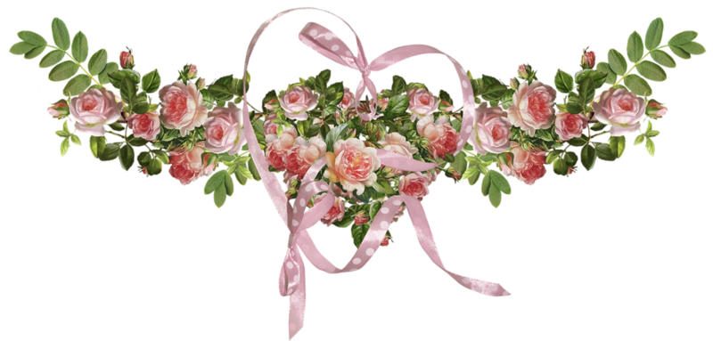
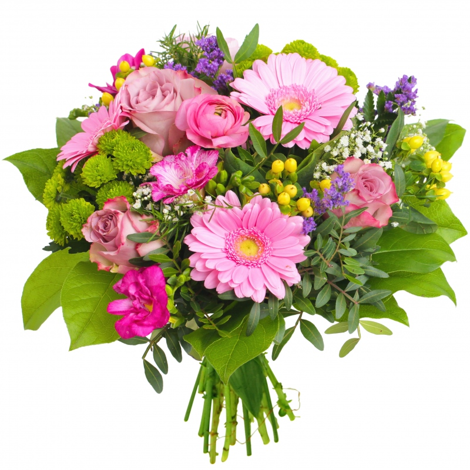
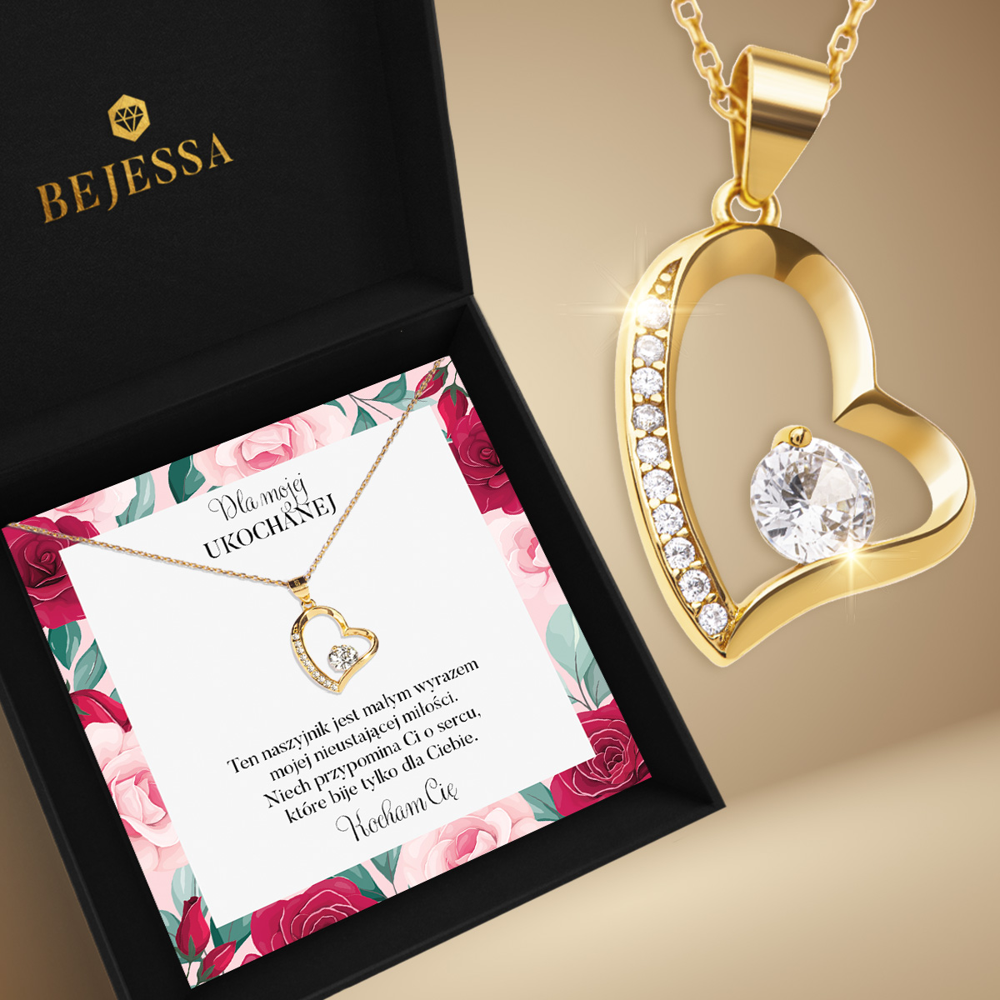

❤ DZIEŃ KOBIET ❤

Spis treści
Na początek trochę historii
Początki Międzynarodowego Dnia Kobiet wywodzą się z ruchów robotniczych w Ameryce Północnej i Europie.
Najwcześniejsze obchody Dnia Kobiet, nazywane obecnie Narodowym Dniem Kobiet, odbyły się 28 lutego
1909 roku w Nowym Jorku. Zorganizowany został przez Socjalistyczną Partię Ameryki zgodnie z sugestią
sufrażystki Theresy Malkiel. Początkowo twierdzono, że dzień ten upamiętnia protest kobiet pracujących
przy produkcji odzieży w Nowym Jorku w dniu 8 marca 1857 roku, jednak zdaniem ekspertów był to mit mający na
celu odseparowanie Międzynarodowego Dnia Kobiet od jego socjalistycznego pochodzenia. W sierpniu 1910 roku
zorganizowano Międzynarodową Socjalistyczną Konferencję Kobiet przed posiedzeniem generalnym Drugiej
Międzynarodówki Socjalistycznej w Kopenhadze, w Danii. Niemieckie delegatki Clara Zetkin, Käte Duncker,
Paula Thiede i inne, zainspirowane częściowo przez amerykańskie socjalistki, zaproponowały ustanowienie corocznego
"Dnia Kobiet". Miał on służyć krzewieniu idei praw kobiet oraz budowaniu społecznego wsparcia dla powszechnych
praw wyborczych dla kobiet. W konferencji udział wzięło ponad 100 uczestniczek z 17 krajów. Ustanowienie Dnia
Kobiet zostało przyjęte w drodze anonimowego głosowania, bez ustalania dokładnej daty jego obchodów.
Sufrażystki w Krakowie – Dzień Kobiet 1911 r. 19 marca 1911 roku po raz pierwszy Międzynarodowy Dzień Kobiet
obchodzono w Austrii, Danii, Niemczech i Szwajcarii. Domagano się prawa kobiet do głosowania i obejmowania
stanowisk publicznych, praw kobiet do pracy i szkoleń zawodowych oraz zaprzestania dyskryminacji w miejscu pracy.
25 marca tego roku wiele robotnic zginęło w pożarze fabryki Triangle Shirtwaist.
Obecnie obchodzimy go 8 marca.
Obecnie obchodzimy go 8 marca.
Jaki prezent dać kobiecie?

Możliwe reakcje:
- Mam alergię
- Zaraz mi zwiędną
- Nie podoba mi się kolor tych kwiatków

Możliwe reakcje:
- Nie noszę złota
- Ania dostała taki sam
- To brylant czy cyrkonia..?

Możliwe reakcje:
- Mam alergię
- Nie lubię gorzkiej czekolady
- Twierdzisz, że jestem gruba?!
Zwiastun filmu "Dzień kobiet"
Na koniec...
Pragnę złożyć najserdeczniejsze życzenia wszystkim kobietom, aby zawsze były zadowolone z życia!